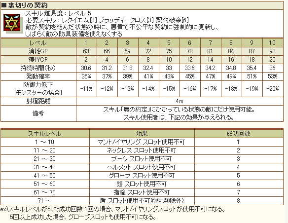

2018.12～ 悪魔 スキル一覧
2018/12/18 悪魔スキル改変後のデータ。
同時に実装された大地強化/弱化十字架情報も掲載しました。
| スピンフラッシュ | ||||||||||||||
|---|---|---|---|---|---|---|---|---|---|---|---|---|---|---|
| スキル難易度 | 1 | |||||||||||||
| 必要スキル | ネクロマンサー:フルアタック[3] |
|||||||||||||
| スキル説明 | 悪魔の鞭を振り回して鋭い攻撃を敵に与える | |||||||||||||
| レベル | 1 | 2 | 3 | 4 | 5 | 6 | 7 | 8 | 9 | 10 | 20 | 30 | 40 | 50 |
| 消費CP | 0 | 0 | 0 | 0 | 0 | 0 | 0 | 0 | 0 | 0 | 0 | 0 | 0 | 0 |
| 獲得CP | 2.6 | 3.2 | 3.8 | 4.4 | 5 | 5.6 | 6.2 | 6.8 | 7.4 | 8 | 14 | 20 | 26 | 32 |
| 物理ダメージ | 2.50% | 5% | 7.50% | 10% | 12.50% | 15% | 17.50% | 20% | 22.50% | 25% | 50% | 75% | 100% | 125% |
| 命中率 | 0.10% | 0.20% | 0.30% | 0.40% | 0.50% | 0.60% | 0.70% | 0.80% | 0.90% | 1% | 2% | 3% | 4% | 5% |
| クリティカル | 5% | 5% | 5% | 5% | 5% | 5% | 5% | 5% | 5% | 5% | 5% | 5% | 5% | 5% |
| 射程距離 | ペットに攻撃の指令を与える。 | |||||||||||||
 |
ドローボディー | |||||||||||||
|---|---|---|---|---|---|---|---|---|---|---|---|---|---|---|
| スキル難易度 | 1 | |||||||||||||
| 必要スキル | スピンフラッシュ[3] | |||||||||||||
| スキル説明 | 鞭で遠い所にいる敵をからめて自分の前まで連れてくる | |||||||||||||
| レベル | 1 | 2 | 3 | 4 | 5 | 6 | 7 | 8 | 9 | 10 | 20 | 30 | 40 | 50 |
| 消費CP | 5 | 5 | 5 | 5 | 5 | 5 | 5 | 5 | 5 | 5 | 5 | 5 | 5 | 5 |
| 獲得CP | 1 | 2 | 3 | 4 | 5 | 6 | 7 | 8 | 9 | 10 | 20 | 30 | 40 | 50 |
| 物理ダメージ | 1% | 2% | 3% | 4% | 5% | 6% | 7% | 8% | 9% | 10% | 20% | 30% | 40% | 50% |
| 命中率 | 0.20% | 0.40% | 0.60% | 0.80% | 1% | 1.20% | 1.40% | 1.60% | 1.80% | 2% | 4% | 6% | 8% | 10% |
| 成功確率 | 15.80% | 16.60% | 17.40% | 18.20% | 19% | 19.80% | 20.60% | 21.40% | 22.20% | 23% | 31% | 39% | 47% | 55% |
| 射程距離 | 武器射程* 300％ | |||||||||||||
| マッドデビル | ||||||||||||||
|---|---|---|---|---|---|---|---|---|---|---|---|---|---|---|
| スキル難易度 | 2 | |||||||||||||
| 必要スキル | スピンフラッシュ[6] ドローボディー[6] |
|||||||||||||
| スキル説明 | 自分がダメージを受ける程、悪魔の本性が呼び覚まされ、最大HPが増加する | |||||||||||||
| レベル | 1 | 2 | 3 | 4 | 5 | 6 | 7 | 8 | 9 | 10 | 20 | 30 | 40 | 50 |
| HP増加量(+[n]) | 80 | 110 | 140 | 170 | 200 | 230 | 260 | 290 | 320 | 350 | 650 | 950 | 1250 | 1550 |
| 備考 | パッシブスキル | |||||||||||||
 |
悪魔の誘惑 | |||||||||||||
|---|---|---|---|---|---|---|---|---|---|---|---|---|---|---|
| スキル難易度 | 3 | |||||||||||||
| 必要スキル |
ネクロマンサー:死霊術[6] ネクロマンサー:デビルイリュージョン[12]
|
|||||||||||||
| スキル説明 |
悪魔の美貌を利用して誘惑し、敵を味方にしてしまう。 他の複雑な制約がなく、チャーミングの成功確率は高いが、持続時間が短い |
|||||||||||||
| レベル | 1 | 2 | 3 | 4 | 5 | 6 | 7 | 8 | 9 | 10 | 20 | 30 | 40 | 50 |
| 消費CP | 17 | 19 | 21 | 23 | 25 | 27 | 29 | 31 | 33 | 35 | 55 | 75 | 95 | 115 |
| 獲得CP | 0.5 | 1 | 1.5 | 2 | 2.5 | 3 | 3.5 | 4 | 4.5 | 5 | 10 | 15 | 20 | 25 |
| 物理ダメージ | 8% | 16% | 24% | 32% | 40% | 48% | 56% | 64% | 72% | 80% | 160% | 240% | 320% | 400% |
| 持続時間(秒) | 7.3 | 7.6 | 7.9 | 8.2 | 8.5 | 8.8 | 9.1 | 9.4 | 9.7 | 10 | 13 | 16 | 19 | 22 |
| 対象mobの力増加 | 54 | 58 | 62 | 66 | 70 | 74 | 78 | 82 | 86 | 90 | 130 | 170 | 210 | 250 |
| 対象mobの知識増加 | 62 | 74 | 86 | 98 | 110 | 122 | 134 | 146 | 158 | 170 | 290 | 410 | 530 | 650 |
| 成功確率 | 68% | 70% | 72% | 74% | 76% | 78% | 80% | 82% | 84% | 86% | 106% | 126% | 146% | 166% |
 |
バインドブレイズ | |||||||||||||
|---|---|---|---|---|---|---|---|---|---|---|---|---|---|---|
| スキル難易度 | 4 | |||||||||||||
| 必要スキル |
ドローボディー[18] 地獄の矛[18] ブラックブルース[6]
|
|||||||||||||
| スキル説明 |
強烈な地獄の業火に包まれた鞭で攻撃する。 地獄の業火は一定回数にわたってダメージを与え続ける |
|||||||||||||
| レベル | 1 | 2 | 3 | 4 | 5 | 6 | 7 | 8 | 9 | 10 | 20 | 30 | 40 | 50 |
| 消費CP | 20 | 25 | 30 | 35 | 40 | 45 | 50 | 55 | 60 | 65 | 115 | 165 | 215 | 265 |
| 獲得CP | 1 | 2 | 3 | 4 | 5 | 6 | 7 | 8 | 9 | 10 | 20 | 30 | 40 | 50 |
| 物理ダメージ | 6% | 12% | 18% | 24% | 30% | 36% | 42% | 48% | 54% | 60% | 120% | 180% | 240% | 300% |
| 火属性ダメージ | 23 ~ 43 | 26 ~ 46 | 29 ~ 49 | 32 ~ 52 | 35 ~ 55 | 38 ~ 58 | 41 ~ 61 | 44 ~ 64 | 47 ~ 67 | 50 ~ 70 | 80 ~ 100 | 110 ~ 130 | 140 ~ 160 | 170 ~ 190 |
| 命中率 | 25.50% | 26% | 26.50% | 27% | 27.50% | 28% | 28.50% | 29% | 29.50% | 30% | 35% | 40% | 45% | 50% |
| 攻撃回数(max 12) | 2 | 2 | 2 | 2 | 3 | 3 | 3 | 3 | 3 | 3 | 4 | 5 | 6 | 7 |
| 地獄の矛 | ||||||||||||||
|---|---|---|---|---|---|---|---|---|---|---|---|---|---|---|
| スキル難易度 | 1 | |||||||||||||
| 必要スキル |
スピンフラッシュ[3] 魔の約定[3]
|
|||||||||||||
| スキル説明 | 自分が攻撃する際に、地獄の監獄にある鉄の矛を召喚し、敵を突いて攻撃する | |||||||||||||
| レベル | 1 | 2 | 3 | 4 | 5 | 6 | 7 | 8 | 9 | 10 | 20 | 30 | 40 | 50 |
| 獲得CP | 0 | 0 | 0 | 0 | 0 | 0 | 0 | 0 | 0 | 0 | 0 | 0 | 0 | 0 |
| 闇ダメージ | 17.5 | 20 | 22.5 | 25 | 27.5 | 30 | 32.5 | 35 | 37.5 | 40 | 65 | 90 | 115 | 140 |
| 発動確率 | 5% | 5.1% | 5.2% | 5.3% | 5.4% | 5.5% | 5.6% | 5.7% | 5.8% | 5.9% | 6.9% | 7.9% | 8.9% | 9.9% |
| 爆発範囲(M) | 3.5 | 3.5 | 3.5 | 3.5 | 3.5 | 3.5 | 3.5 | 3.5 | 3.5 | 3.5 | 3.5 | 3.5 | 3.5 | 3.5 |
| 備考 | パッシブスキル。攻撃命中時、一定確率で発動(最大10%) | |||||||||||||
| ヘルプリズン | ||||||||||||||
|---|---|---|---|---|---|---|---|---|---|---|---|---|---|---|
| スキル難易度 | 2 | |||||||||||||
| 必要スキル |
地獄の矛[6] 魔の約定[6]
|
|||||||||||||
| スキル説明 | 敵を地の底より召喚した「地獄の監獄」の中に閉じこめてしまう。 敵は一定時間移動できない。 | |||||||||||||
| レベル | 1 | 2 | 3 | 4 | 5 | 6 | 7 | 8 | 9 | 10 | 20 | 30 | 40 | 50 |
| 消費CP | 7 | 9 | 11 | 13 | 15 | 17 | 19 | 21 | 23 | 25 | 45 | 65 | 85 | 105 |
| 発動確率 | 5.10% | 5.20% | 5.30% | 5.40% | 5.50% | 5.60% | 5.70% | 5.80% | 5.90% | 6% | 7% | 8% | 9% | 10% |
| ヘルプリズンHP | 60 | 70 | 80 | 90 | 100 | 110 | 120 | 130 | 140 | 150 | 250 | 350 | 450 | 550 |
| ヘルプリズン防御力 | 60 | 100 | 140 | 180 | 220 | 260 | 300 | 340 | 380 | 420 | 820 | 1220 | 1620 | 2020 |
| 爆発範囲(M) | 2 | 2 | 2 | 2 | 2 | 2 | 2 | 2 | 2 | 2 | 2 | 2 | 2 | 2 |
| 持続時間(秒) | 5秒 | |||||||||||||
| クールタイム | 30秒 | |||||||||||||
| 備考 | PVP時、Tabキーにて活性化、非活性を選択可能。敵の攻撃無視 | |||||||||||||
| ワームバイト | ||||||||||||||
|---|---|---|---|---|---|---|---|---|---|---|---|---|---|---|
| スキル難易度 | 3 | |||||||||||||
| 必要スキル |
ヘルプリズン[6] ネクロマンサー:ミラーカーズ[3]
|
|||||||||||||
| スキル説明 | 地中から虫を召喚し、自分を攻撃した敵を噛ませる。 噛まれた敵はダメージを受け、噛まれている間は動くことができない | |||||||||||||
| レベル | 1 | 2 | 3 | 4 | 5 | 6 | 7 | 8 | 9 | 10 | 20 | 30 | 40 | 50 |
| 消費CP | 7 | 10 | 13 | 16 | 19 | 22 | 25 | 28 | 31 | 34 | 64 | 94 | 124 | 154 |
| 獲得CP | 0 | 0 | 0 | 0 | 0 | 0 | 0 | 0 | 0 | 0 | 0 | 0 | 0 | 0 |
| 闇ダメ(2秒ごと) | 11 | 12 | 13 | 14 | 15 | 16 | 17 | 18 | 19 | 20 | 30 | 40 | 50 | 60 |
| 発動確率 | 4.20% | 4.40% | 4.60% | 4.80% | 5% | 5.20% | 5.40% | 5.60% | 5.80% | 6% | 8% | 10% | 12% | 14% |
| ワーム体力 | 50 | 70 | 90 | 110 | 130 | 150 | 170 | 190 | 210 | 230 | 430 | 630 | 830 | 1030 |
| ワーム防御力 | 20 | 35 | 50 | 65 | 80 | 95 | 110 | 125 | 140 | 155 | 305 | 455 | 605 | 755 |
| 爆発範囲(M) | 1.5 | 1.5 | 1.5 | 1.5 | 1.5 | 1.5 | 1.5 | 1.5 | 1.5 | 1.5 | 1.5 | 1.5 | 1.5 | 1.5 |
| 持続時間(秒) | 60 | 60 | 60 | 60 | 60 | 60 | 60 | 60 | 60 | 60 | 60 | 60 | 60 | 60 |
| 備考 | 物理攻撃に対してのみ、カウンターとして発動。 | |||||||||||||
 |
スパイダーウェブ | |||||||||||||
|---|---|---|---|---|---|---|---|---|---|---|---|---|---|---|
| スキル難易度 | 4 | |||||||||||||
| 必要スキル |
ヘルプリズン[12] ワームバイト[6]
|
|||||||||||||
| スキル説明 | 自分が攻撃されると、周囲の一定地域に移動を抑止する蜘蛛の糸を撒き散らす | |||||||||||||
| レベル | 1 | 2 | 3 | 4 | 5 | 6 | 7 | 8 | 9 | 10 | 20 | 30 | 40 | 50 |
| 消費CP | 19 | 23 | 27 | 31 | 35 | 39 | 43 | 47 | 51 | 55 | 95 | 135 | 175 | 215 |
| 獲得CP | 0 | 0 | 0 | 0 | 0 | 0 | 0 | 0 | 0 | 0 | 0 | 0 | 0 | 0 |
| 爆発範囲(M) | 1.83 | 1.86 | 1.89 | 1.92 | 1.95 | 1.98 | 2.01 | 2.04 | 2.07 | 2.1 | 2.4 | 2.7 | 3 | 3.3 |
| 持続時間(秒) | 5.1 | 5.2 | 5.3 | 5.4 | 5.5 | 5.6 | 5.7 | 5.8 | 5.9 | 6 | 7 | 8 | 9 | 10 |
| 発動確率 | 6.20% | 6.40% | 6.60% | 6.80% | 7% | 7.20% | 7.40% | 7.60% | 7.80% | 8% | 10% | 12% | 14% | 16% |
| 同時設置可能個数 | 3 | 3 | 3 | 3 | 3 | 3 | 3 | 3 | 3 | 3 | 3 | 3 | 3 | 3 |
| 備考 | 味方プレイヤー・敵プレイヤーを含む全ての対象に移動妨害効果が適用されます。 | |||||||||||||
| 備考 | 最大範囲4.5m | |||||||||||||
| クールタイム | 10秒 | |||||||||||||
| アラクノフォビア | ||||||||||||||
|---|---|---|---|---|---|---|---|---|---|---|---|---|---|---|
| スキル難易度 | 5 | |||||||||||||
| 必要スキル |
スパイダーウェブ[6] ネクロマンサー:逆鱗[3]
|
|||||||||||||
| スキル説明 | 自分が攻撃されると、周囲の一定地域に移動を抑止する蜘蛛の糸を撒き散らす。 抜け出せない敵は糸の中で蜘蛛の攻撃を受ける | |||||||||||||
| レベル | 1 | 2 | 3 | 4 | 5 | 6 | 7 | 8 | 9 | 10 | 20 | 30 | 40 | 50 |
| 消費CP | 26 | 32 | 38 | 44 | 50 | 56 | 62 | 68 | 74 | 80 | 140 | 200 | 260 | 320 |
| 獲得CP | 0 | 0 | 0 | 0 | 0 | 0 | 0 | 0 | 0 | 0 | 0 | 0 | 0 | 0 |
| 闇ダメ(1秒当たり) | 38 | 41 | 44 | 47 | 50 | 53 | 56 | 59 | 62 | 65 | 95 | 125 | 155 | 185 |
| 発動確率 | 3.10% | 3.20% | 3.30% | 3.40% | 3.50% | 3.60% | 3.70% | 3.80% | 3.90% | 4% | 5% | 6% | 7% | 8% |
| 爆発範囲(M) | 1.83 | 1.86 | 1.89 | 1.92 | 1.95 | 1.98 | 2.01 | 2.04 | 2.07 | 2.1 | 2.4 | 2.7 | 3 | 3.3 |
| 持続時間(秒) | 10秒 | |||||||||||||
| 同時設置可能個数 | 1 | 1 | 1 | 1 | 1 | 1 | 1 | 1 | 1 | 1 | 1 | 1 | 1 | 1 |
| 備考 | 敵にのみ蜘蛛の巣の効果が適用されます | |||||||||||||
| 備考 | 最大範囲4.5m | |||||||||||||
| クールタイム | 10秒 | |||||||||||||
| ポイズンボム | ||||||||||||||
|---|---|---|---|---|---|---|---|---|---|---|---|---|---|---|
| スキル難易度 | 1 | |||||||||||||
| 必要スキル |
ネクロマンサー:恐怖の幻影[3]
|
|||||||||||||
| スキル説明 | 敵が毒にかかった場合、その体内に広がった毒を瞬時に爆発させて 強力なダメージをあたえる。爆発した毒は、効果が消えてなくなる | |||||||||||||
| レベル | 1 | 2 | 3 | 4 | 5 | 6 | 7 | 8 | 9 | 10 | 20 | 30 | 40 | 50 |
| 消費CP | 10 | 13 | 16 | 19 | 22 | 25 | 28 | 31 | 34 | 37 | 67 | 97 | 127 | 157 |
| 獲得CP | 0 | 0 | 0 | 0 | 0 | 0 | 0 | 0 | 0 | 0 | 0 | 0 | 0 | 0 |
| 地属性ダメージ | 20 | 25 | 30 | 35 | 40 | 45 | 50 | 55 | 60 | 65 | 115 | 165 | 215 | 265 |
| 地抵抗の減少 | -10% | -12% | -14% | -16% | -18% | -20% | -22% | -24% | -26% | -28% | -48% | -68% | -88% | -108% |
| 射程距離(M) | 3 | 3 | 3 | 3 | 3 | 3 | 3 | 3 | 3 | 3 | 3 | 3 | 3 | 3 |
| 再使用時間(秒) | 3秒 | |||||||||||||
| ポイズンガス | ||||||||||||||
|---|---|---|---|---|---|---|---|---|---|---|---|---|---|---|
| スキル難易度 | 2 | |||||||||||||
| 必要スキル |
ポイズンボム[12] 魂の契約[6]
|
|||||||||||||
| スキル説明 | 一定の地域に毒ガスの雲を形成し、その中いる敵は毒に侵される | |||||||||||||
| レベル | 1 | 2 | 3 | 4 | 5 | 6 | 7 | 8 | 9 | 10 | 20 | 30 | 40 | 50 |
| 消費CP | 27 | 29 | 31 | 33 | 35 | 37 | 39 | 41 | 43 | 45 | 65 | 85 | 105 | 125 |
| 大地ダメージ(毎秒) | 23 | 26 | 29 | 32 | 35 | 38 | 41 | 44 | 47 | 50 | 80 | 110 | 140 | 170 |
| 大地ダメージ(初回) | 30～40 | 33～43 | 36～46 | 39～49 | 42～52 | 45～55 | 48～58 | 51～61 | 54～64 | 57～67 | 87～97 | 117～127 | 147～157 | 177～187 |
| 大地ダメ持続時間(秒) | 10.3 | 10.6 | 10.9 | 11.2 | 11.5 | 11.8 | 12.1 | 12.4 | 12.7 | 13 | 16 | 19 | 22 | 25 |
| 毒雲持続時間(秒) | 10秒 | |||||||||||||
| 爆発範囲(M) | 2.01 | 2.02 | 2.03 | 2.04 | 2.05 | 2.06 | 2.07 | 2.08 | 2.09 | 2.1 | 2.2 | 2.3 | 2.4 | 2.5 |
| ガス持続時間(秒) | 5.1 | 5.2 | 5.3 | 5.4 | 5.5 | 5.6 | 5.7 | 5.8 | 5.9 | 6 | 7 | 8 | 9 | 10 |
| 射程距離(M) | 4 | 4 | 4 | 4 | 4 | 4 | 4 | 4 | 4 | 4 | 4 | 4 | 4 | 4 |
| 同時設置可能数 | 3回 | |||||||||||||
| ポイズンスプレー | ||||||||||||||
|---|---|---|---|---|---|---|---|---|---|---|---|---|---|---|
| スキル難易度 | 3 | |||||||||||||
| 必要スキル |
ポイズンボム[12] ドローボディー[12]
|
|||||||||||||
| スキル説明 | 敵が毒にかかった場合、その体内に広がった毒を全身に拡散させて ダメージと一緒に、暗闇と混乱とマヒ状態を引き起こす。 拡散した毒は、効果が消えてなくなる | |||||||||||||
| レベル | 1 | 2 | 3 | 4 | 5 | 6 | 7 | 8 | 9 | 10 | 20 | 30 | 40 | 50 |
| 消費CP | 21 | 22 | 23 | 24 | 25 | 26 | 27 | 28 | 29 | 30 | 40 | 50 | 60 | 70 |
| 獲得CP | 2 | 4 | 6 | 8 | 10 | 12 | 14 | 16 | 18 | 20 | 40 | 60 | 80 | 100 |
| 地属性ダメージ | 13 | 16 | 19 | 22 | 25 | 28 | 31 | 34 | 37 | 40 | 70 | 100 | 130 | 160 |
| 暗闇混乱持続時間(秒) | 5.4 | 5.8 | 6.2 | 6.6 | 7 | 7.4 | 7.8 | 8.2 | 8.6 | 9 | 13 | 17 | 21 | 25 |
| 麻痺持続時間(秒) | 2.1 | 2.2 | 2.3 | 2.4 | 2.5 | 2.6 | 2.7 | 2.8 | 2.9 | 3 | 4 | 5 | 6 | 7 |
| 暗闇混乱確率 | 101% | 102% | 103% | 104% | 105% | 106% | 107% | 108% | 109% | 110% | 120% | 130% | 140% | 150% |
| 麻痺確率 | 11% | 12% | 13% | 14% | 15% | 16% | 17% | 18% | 19% | 20% | 30% | 40% | 50% | 60% |
| クールタイム(秒) | 10 | 10 | 10 | 10 | 10 | 10 | 10 | 10 | 10 | 10 | 10 | 10 | 10 | 10 |
| 射程距離(M) | 4 | 4 | 4 | 4 | 4 | 4 | 4 | 4 | 4 | 4 | 4 | 4 | 4 | 4 |
| ポイズンエクスプロージョン | ||||||||||||||
|---|---|---|---|---|---|---|---|---|---|---|---|---|---|---|
| スキル難易度 | 4 | |||||||||||||
| 必要スキル |
ポイズンスプレー[6]
|
|||||||||||||
| スキル説明 | 敵が毒にかかった場合、瞬間的に体外に毒を噴き出すようにして、周囲にポイズンガスを形成する | |||||||||||||
| レベル | 1 | 2 | 3 | 4 | 5 | 6 | 7 | 8 | 9 | 10 | 20 | 30 | 40 | 50 |
| 消費CP | 22 | 24 | 26 | 28 | 30 | 32 | 34 | 36 | 38 | 40 | 60 | 80 | 100 | 120 |
| 獲得CP | 4 | 8 | 12 | 16 | 20 | 24 | 28 | 32 | 36 | 40 | 80 | 120 | 160 | 200 |
| 大地ダメージ(初回) | 50～60 | 56～66 | 62～72 | 68～78 | 74～84 | 80～90 | 86～96 | 92～102 | 98～108 | 104～114 | 164～174 | 224～234 | 284～294 | 344～354 |
| 大地ダメージ(毎秒) | 29 | 38 | 47 | 56 | 65 | 74 | 83 | 92 | 101 | 110 | 200 | 290 | 380 | 470 |
| 大地ダメ持続時間(秒) | 3 | 3 | 3 | 3 | 3 | 3 | 3 | 3 | 3 | 3 | 3 | 3 | 3 | 3 |
| 毒雲持続時間(秒) | 10秒 | |||||||||||||
| ポイズンガス発生確率 | 100% | 100% | 100% | 100% | 100% | 100% | 100% | 100% | 100% | 100% | 100% | 100% | 100% | 100% |
| 射程距離(M) | 4m | |||||||||||||
| 爆発範囲(M) | 3.5m | |||||||||||||
| クールタイム | 10秒 | |||||||||||||
| 備考 | 味方の治療でなく、敵への攻撃スキルとして変更。解毒効果削除 | |||||||||||||
| モータルクラウド | ||||||||||||||
|---|---|---|---|---|---|---|---|---|---|---|---|---|---|---|
| スキル難易度 | 5 | |||||||||||||
| 必要スキル |
烈火の怒り[12] 蟻地獄[6]
|
|||||||||||||
| スキル説明 | 周囲に強力で致命的なダメージをあたえる毒ガスで出来た雲を形成する。 その毒ガスの雲の中では、敵は毒に侵され、 素早くすり抜けなければ即死する事もある | |||||||||||||
| レベル | 1 | 2 | 3 | 4 | 5 | 6 | 7 | 8 | 9 | 10 | 20 | 30 | 40 | 50 |
| 消費CP | 55 | 60 | 65 | 70 | 75 | 80 | 85 | 90 | 95 | 100 | 150 | 200 | 250 | 300 |
| 獲得CP | 1 | 2 | 3 | 4 | 5 | 6 | 7 | 8 | 9 | 10 | 20 | 30 | 40 | 50 |
| 大地ダメージ(初回) | 75～78 | 82～85 | 89～92 | 96～99 | 103～106 | 110～113 | 117～120 | 124～127 | 131～134 | 138～141 | 208～211 | 278～281 | 348～351 | 418～421 |
| 大地ダメージ(毎秒) | 74 | 78 | 82 | 86 | 90 | 94 | 98 | 102 | 106 | 110 | 150 | 190 | 230 | 270 |
| 持続時間(秒) | 3 | 3 | 3 | 3 | 3 | 3 | 3 | 3 | 3 | 3 | 3 | 3 | 3 | 3 |
| 限界時間(秒) | 9.9 | 9.8 | 9.7 | 9.6 | 9.5 | 9.4 | 9.3 | 9.2 | 9.1 | 9 | 8 | 7 | 6 | 5 |
| 即死確率 | 8% | 9% | 9% | 9% | 10% | 10% | 10% | 10% | 11% | 11% | 14% | 17% | 20% | 23% |
| 爆発範囲(M) | 2.5 | 2.5 | 2.5 | 2.5 | 2.5 | 2.5 | 2.5 | 2.5 | 2.5 | 2.5 | 2.5 | 2.5 | 2.5 | 2.5 |
| ガス持続時間(秒) | 10 | 10 | 10 | 10 | 10 | 10 | 10 | 10 | 10 | 10 | 10 | 10 | 10 | 10 |
| 備考 | 強制的に持続大地ダメージ発生(毒抵抗無視) | |||||||||||||
| ディープスロウ | ||||||||||||||
|---|---|---|---|---|---|---|---|---|---|---|---|---|---|---|
| スキル難易度 | 2 | |||||||||||||
| 必要スキル |
ドローボディー[6]
|
|||||||||||||
| スキル説明 | 非常に悲しい歌声で気を引き、敵のすべての行動を遅くしてしまう | |||||||||||||
| レベル | 1 | 2 | 3 | 4 | 5 | 6 | 7 | 8 | 9 | 10 | 20 | 30 | 40 | 50 |
| 消費CP | 5.4 | 5.8 | 6.2 | 6.6 | 7 | 7.4 | 7.8 | 8.2 | 8.6 | 9 | 13 | 17 | 21 | 25 |
| 獲得CP | 0 | 0 | 0 | 0 | 0 | 0 | 0 | 0 | 0 | 0 | 0 | 0 | 0 | 0 |
| 全体速度低下確率 | 34% | 35% | 36% | 37% | 38% | 39% | 40% | 41% | 42% | 43% | 53% | 63% | 73% | 83% |
| 移動・攻撃速度低下量 | -5.60% | -6.20% | -6.80% | -7.40% | -8% | -8.60% | -9.20% | -9.80% | -10.40% | -11% | -17% | -23% | -29% | -35% |
| 持続時間(秒) | 6 | 6 | 6 | 6 | 6 | 6 | 6 | 6 | 6 | 6 | 6 | 6 | 6 | 6 |
| 更新間隔(秒) | 5 | 5 | 5 | 5 | 5 | 5 | 5 | 5 | 5 | 5 | 5 | 5 | 5 | 5 |
| 爆発範囲(M) | 2.5 | 2.5 | 2.5 | 2.5 | 2.5 | 2.5 | 2.5 | 2.5 | 2.5 | 2.5 | 2.5 | 2.5 | 2.5 | 2.5 |
| ブラックブルース | ||||||||||||||
|---|---|---|---|---|---|---|---|---|---|---|---|---|---|---|
| スキル難易度 | 3 | |||||||||||||
| 必要スキル |
スピンフラッシュ[12] ヘルプリズン[6] 血の盟約[3]
|
|||||||||||||
| スキル説明 | 敵の鎧の内側に多くの刺を作って鎧の内側から攻撃する。 防御力が高い敵であればあるほど、強力なダメージを与えることが出来る | |||||||||||||
| レベル | 1 | 2 | 3 | 4 | 5 | 6 | 7 | 8 | 9 | 10 | 20 | 30 | 40 | 50 |
| 消費CP | 24 | 33 | 42 | 51 | 60 | 69 | 78 | 87 | 96 | 105 | 195 | 285 | 375 | 465 |
| 獲得CP | 1 | 2 | 3 | 4 | 5 | 6 | 7 | 8 | 9 | 10 | 20 | 30 | 40 | 50 |
| 物理ダメージ | 2% | 4% | 6% | 8% | 10% | 12% | 14% | 16% | 18% | 20% | 40% | 60% | 80% | 100% |
| ブルースによる追加物理ダメージ割合 | 28% | 31% | 34% | 37% | 40% | 43% | 46% | 49% | 52% | 55% | 85% | 115% | 145% | 175% |
| 攻撃回数(Max 6) | 2 | 2 | 2 | 2 | 2 | 2 | 2 | 2 | 2 | 2 | 3 | 3 | 4 | 4 |
| 射程距離(M) | 2.5 | 2.5 | 2.5 | 2.5 | 2.5 | 2.5 | 2.5 | 2.5 | 2.5 | 2.5 | 2.5 | 2.5 | 2.5 | 2.5 |
| 備考 | [1次ダメージで減少された物理ダメージ* X](Max 300％) | |||||||||||||
| デッドリー ナイトメア | ||||||||||||||
|---|---|---|---|---|---|---|---|---|---|---|---|---|---|---|
| スキル難易度 | 4 | |||||||||||||
| 必要スキル |
ディープスロウ[12] ブラックブルース[6] スパイダーウェブ[3]
|
|||||||||||||
| スキル説明 |
周囲の敵を悪夢の眠りに巻き込む。
眠った敵は持続的にダメージを受けて、
攻撃を受けるか周囲の助けがなければ目覚めることが出来ない。
使用中は歌に集中するので動けない |
|||||||||||||
| レベル | 1 | 2 | 3 | 4 | 5 | 6 | 7 | 8 | 9 | 10 | 20 | 30 | 40 | 50 |
| 消費CP | 42 | 49 | 56 | 63 | 70 | 77 | 84 | 91 | 98 | 105 | 175 | 245 | 315 | 385 |
| 獲得CP | 3 | 6 | 9 | 12 | 15 | 18 | 21 | 24 | 27 | 30 | 60 | 90 | 120 | 150 |
| 闇ダメ(1秒当たり) | 51 | 57 | 63 | 69 | 75 | 81 | 87 | 93 | 99 | 105 | 165 | 225 | 285 | 345 |
| 爆発範囲(M) | 2.53 | 2.56 | 2.59 | 2.62 | 2.65 | 2.68 | 2.71 | 2.74 | 2.77 | 2.8 | 3.1 | 3.4 | 3.7 | 4 |
| 睡眠確率 | 80% | 80% | 80% | 80% | 80% | 80% | 80% | 80% | 80% | 80% | 80% | 80% | 80% | 80% |
| 持続時間(秒) | 12 | 12 | 12 | 12 | 12 | 12 | 12 | 12 | 12 | 12 | 12 | 12 | 12 | 12 |
| 再使用時間(秒) | 30 | 30 | 30 | 30 | 30 | 30 | 30 | 30 | 30 | 30 | 30 | 30 | 30 | 30 |
| 備考 | 敵の攻撃無視(詠唱中移動可能) | |||||||||||||
| 備考 | 睡眠時ダメージは状態異常に当たるため、カンストの影響を受けない。 | |||||||||||||
| レクイエム | ||||||||||||||
|---|---|---|---|---|---|---|---|---|---|---|---|---|---|---|
| スキル難易度 | 5 | |||||||||||||
| 必要スキル |
ブラックブルース[12] ヘルプリズン[18] デッドリーナイトメア[6]
|
|||||||||||||
| スキル説明 | 死者のための鎮魂曲を歌って、生者を深い悲しみに落とすことで 体力回復が出来ないようにしてしまい、体力回復の効果を下げてしまう。 また、行動不能状態を回復できなくする | |||||||||||||
| レベル | 1 | 2 | 3 | 4 | 5 | 6 | 7 | 8 | 9 | 10 | 20 | 30 | 40 | 50 |
| 消費CP | 23 | 26 | 29 | 32 | 35 | 38 | 41 | 44 | 47 | 50 | 80 | 110 | 140 | 170 |
| 獲得CP | 0.2 | 0.4 | 0.6 | 0.8 | 1 | 1.2 | 1.4 | 1.6 | 1.8 | 2 | 4 | 6 | 8 | 10 |
| 発動確率 | 35% | 45% | 55% | 65% | 75% | 85% | 95% | 105% | 115% | 125% | 225% | 325% | 425% | 525% |
| 回復率の低下発動確率 | 26% | 27% | 28% | 29% | 30% | 31% | 32% | 33% | 34% | 35% | 45% | 55% | 65% | 75% |
| 回復率の低下(Max 90％) | 21% | 22% | 23% | 24% | 25% | 26% | 27% | 28% | 29% | 30% | 40% | 50% | 60% | 70% |
| 復活妨害確率 | 100% | 100% | 100% | 100% | 100% | 100% | 100% | 100% | 100% | 100% | 100% | 100% | 100% | 100% |
| 持続時間(秒) | 6 | 6 | 6 | 6 | 6 | 6 | 6 | 6 | 6 | 6 | 6 | 6 | 6 | 6 |
| 更新間隔(秒) | 5 | 5 | 5 | 5 | 5 | 5 | 5 | 5 | 5 | 5 | 5 | 5 | 5 | 5 |
| 爆発範囲(M) | 3ｍ | |||||||||||||
| 備考 | アースヒールやHP吸収オプションのような即時回復スキルを無力化する | |||||||||||||
| 備考 | 呪い抵抗で回復率の低下数値だけ抵抗が可能。 | |||||||||||||
| ブラッディークロス | ||||||||||||||
|---|---|---|---|---|---|---|---|---|---|---|---|---|---|---|
| スキル難易度 | 5 | |||||||||||||
| 必要スキル |
マッドデビル[18] 悪魔の誘惑[12] ディープスロウ[18] 血の盟約[12] |
|||||||||||||
| スキル説明 | 敵を攻撃する場合、低い確率で血で染まった呪い十字架を召喚して攻撃する。 この十字架は一定範囲内にいる敵の体力を吸い取りパーティーメンバーに与える | |||||||||||||
| レベル | 1 | 2 | 3 | 4 | 5 | 6 | 7 | 8 | 9 | 10 | 20 | 30 | 40 | 50 |
| 消費CP | 12 | 14 | 16 | 18 | 20 | 22 | 24 | 26 | 28 | 30 | 50 | 70 | 90 | 110 |
| 獲得CP | 0 | 0 | 0 | 0 | 0 | 0 | 0 | 0 | 0 | 0 | 0 | 0 | 0 | 0 |
| 闇ダメ | 9 | 10 | 11 | 12 | 13 | 14 | 15 | 16 | 17 | 18 | 28 | 38 | 48 | 58 |
| 発動確率(Max 15％) | 2.20% | 2.40% | 2.60% | 2.80% | 3% | 3.20% | 3.40% | 3.60% | 3.80% | 4% | 6% | 8% | 10% | 12% |
| 爆発範囲(M) | 3 | 3 | 3 | 3 | 3 | 3 | 3 | 3 | 3 | 3 | 3 | 3 | 3 | 3 |
| 備考 | 敵を攻撃した時に一定確率で、範囲内の味方全員が恩恵を受けられる。 | |||||||||||||
| 備考 | パッシブスキル | |||||||||||||
| 備考 | 最大確率30%→15%、敵から受けたダメージの100%→50%に変更 | |||||||||||||
| 魔の約定 | ||||||||||||||
|---|---|---|---|---|---|---|---|---|---|---|---|---|---|---|
| スキル難易度 | 1 | |||||||||||||
| 必要スキル |
ドローボディー[3]
|
|||||||||||||
| スキル説明 | 敵をとても甘ったるい餌で誘惑して契約を結ぶ。 契約した敵は一定時間毎に体力を回復するが、周りの敵にはダメージが与えられる | |||||||||||||
| レベル | 1 | 2 | 3 | 4 | 5 | 6 | 7 | 8 | 9 | 10 | 20 | 30 | 40 | 50 |
| 消費CP | 1.5 | 2 | 2.5 | 3 | 3.5 | 4 | 4.5 | 5 | 5.5 | 6 | 11 | 16 | 21 | 26 |
| 獲得CP | 0 | 0 | 0 | 0 | 0 | 0 | 0 | 0 | 0 | 0 | 0 | 0 | 0 | 0 |
| 持続時間(秒) | 11 | 12 | 13 | 14 | 15 | 16 | 17 | 18 | 19 | 20 | 30 | 40 | 50 | 60 |
| 体力回復 | 15 | 30 | 45 | 60 | 75 | 90 | 105 | 120 | 135 | 150 | 300 | 450 | 600 | 750 |
| 闇属性ダメージ | 4.5 | 6 | 7.5 | 9 | 10.5 | 12 | 13.5 | 15 | 16.5 | 18 | 33 | 48 | 63 | 78 |
| 闇属性のダメージ爆発範囲(M) | 1.5 | 1.5 | 1.5 | 1.5 | 1.5 | 1.5 | 1.5 | 1.5 | 1.5 | 1.5 | 1.5 | 1.5 | 1.5 | 1.5 |
| 射程距離(M) | 4 | |||||||||||||
| 効果発動周期(秒) | 5 | 5 | 5 | 5 | 5 | 5 | 5 | 5 | 5 | 5 | 5 | 5 | 5 | 5 |
| 備考 | 敵と契約を結ぶ。万病治療薬・祝福の聖水で治療可能。 | |||||||||||||
| 魂の契約 | ||||||||||||||
|---|---|---|---|---|---|---|---|---|---|---|---|---|---|---|
| スキル難易度 | 2 | |||||||||||||
| 必要スキル |
魔の約定[6] |
|||||||||||||
| スキル説明 | 敵が契約を結んだ状態の時に、その契約を修正して死後の魂に関する権利を 悪魔に譲渡する。これで敵は死んだ際に最後の一撃を与えた者に 一定数のCPを奪われるようになる | |||||||||||||
| レベル | 1 | 2 | 3 | 4 | 5 | 6 | 7 | 8 | 9 | 10 | 20 | 30 | 40 | 50 |
| 消費CP | 4 | 7 | 10 | 13 | 16 | 19 | 22 | 25 | 28 | 31 | 61 | 91 | 121 | 151 |
| 獲得CP | 0 | 0 | 0 | 0 | 0 | 0 | 0 | 0 | 0 | 0 | 0 | 0 | 0 | 0 |
| 持続時間(秒) | 31 | 32 | 33 | 34 | 35 | 36 | 37 | 38 | 39 | 40 | 50 | 60 | 70 | 80 |
| ターゲット死亡CP獲得量 | 29 | 33 | 37 | 41 | 45 | 49 | 53 | 57 | 61 | 65 | 105 | 145 | 185 | 225 |
| 射程距離(M) | 4 | 4 | 4 | 4 | 4 | 4 | 4 | 4 | 4 | 4 | 4 | 4 | 4 | 4 |
| 爆発範囲(M) | 1.8 | 1.8 | 1.8 | 1.8 | 1.8 | 1.8 | 1.8 | 1.8 | 1.8 | 1.8 | 1.8 | 1.8 | 1.8 | 1.8 |
| 備考 | 契約状態の敵にのみ適用可能 | |||||||||||||
| 血の盟約 | ||||||||||||||
|---|---|---|---|---|---|---|---|---|---|---|---|---|---|---|
| スキル難易度 | 3 | |||||||||||||
| 必要スキル |
ネクロマンサー:死霊術[12] 魂の契約[6] |
|||||||||||||
| スキル説明 | 敵が契約を結んだ状態の時に、その契約を修正して 死後の血に関する権利を悪魔に譲渡する。 これで敵は死んだ際に最後の一撃を与えた者に 一定数の体力を奪われるようになる | |||||||||||||
| レベル | 1 | 2 | 3 | 4 | 5 | 6 | 7 | 8 | 9 | 10 | 20 | 30 | 40 | 50 |
| 消費CP | 1.5 | 2 | 2.5 | 3 | 3.5 | 4 | 4.5 | 5 | 5.5 | 6 | 11 | 16 | 21 | 26 |
| 獲得CP | 0 | 0 | 0 | 0 | 0 | 0 | 0 | 0 | 0 | 0 | 0 | 0 | 0 | 0 |
| 持続時間(秒) | 31 | 32 | 33 | 34 | 35 | 36 | 37 | 38 | 39 | 40 | 50 | 60 | 70 | 80 |
| ターゲット死亡HP獲得量 | 55 | 85 | 115 | 145 | 175 | 205 | 235 | 265 | 295 | 325 | 625 | 925 | 1225 | 1525 |
| 射程距離(M) | 4 | 4 | 4 | 4 | 4 | 4 | 4 | 4 | 4 | 4 | 4 | 4 | 4 | 4 |
| 爆発範囲(M) | 1.8 | 1.8 | 1.8 | 1.8 | 1.8 | 1.8 | 1.8 | 1.8 | 1.8 | 1.8 | 1.8 | 1.8 | 1.8 | 1.8 |
| 備考 | 契約状態の敵にのみ適用可能 | |||||||||||||
 |
契約破棄 | |||||||||||||
|---|---|---|---|---|---|---|---|---|---|---|---|---|---|---|
| スキル難易度 | 4 | |||||||||||||
| 必要スキル |
魔の約定[18] 魂の契約[12] 血の盟約[6] |
|||||||||||||
| スキル説明 | 敵が契約を結んだ状態の時に、 一方的に契約を破棄して敵に衝撃と共に大きな闇ダメージを与える | |||||||||||||
| レベル | 1 | 2 | 3 | 4 | 5 | 6 | 7 | 8 | 9 | 10 | 20 | 30 | 40 | 50 |
| 消費CP | 35 | 40 | 45 | 50 | 55 | 60 | 65 | 70 | 75 | 80 | 130 | 180 | 230 | 280 |
| 獲得CP | 7 | 9 | 11 | 13 | 15 | 17 | 19 | 21 | 23 | 25 | 45 | 65 | 85 | 105 |
| 闇属性ダメージ | 58 | 66 | 74 | 82 | 90 | 98 | 106 | 114 | 122 | 130 | 210 | 290 | 370 | 450 |
| 射程距離(M) | 4 | 4 | 4 | 4 | 4 | 4 | 4 | 4 | 4 | 4 | 4 | 4 | 4 | 4 |
| 備考 | 契約状態の敵にのみ適用可能。使用時、契約効果も消える。 | |||||||||||||
| 裏切りの契約 | ||||||||||||||
|---|---|---|---|---|---|---|---|---|---|---|---|---|---|---|
| スキル難易度 | 5 | |||||||||||||
| 必要スキル |
レクイエム[3] ブラッディークロス[3] 契約破棄[6]
|
|||||||||||||
| スキル説明 | 敵が契約を結んだ状態の時に、悪質で不公平な契約に強制的に更新し、 しばらく敵の防具装備を使えなくする | |||||||||||||
| レベル | 1 | 2 | 3 | 4 | 5 | 6 | 7 | 8 | 9 | 10 | 20 | 30 | 40 | 50 |
| 消費CP | 63 | 66 | 69 | 72 | 75 | 78 | 81 | 84 | 87 | 90 | 120 | 150 | 180 | 210 |
| 獲得CP | 2 | 4 | 6 | 8 | 10 | 12 | 14 | 16 | 18 | 20 | 40 | 60 | 80 | 100 |
| 持続時間(秒) | 30.6 | 31.2 | 31.8 | 32.4 | 33 | 33.6 | 34.2 | 34.8 | 35.4 | 36 | 42 | 48 | 54 | 60 |
| 発動確率 | 35% | 37% | 39% | 41% | 43% | 45% | 47% | 49% | 51% | 53% | 73% | 93% | 113% | 133% |
| 防御力低下(対mob) | -11% | -12% | -13% | -14% | -15% | -16% | -17% | -18% | -19% | -20% | -30% | -40% | -50% | -60% |
| 射程距離(M) | 4 | 4 | 4 | 4 | 4 | 4 | 4 | 4 | 4 | 4 | 4 | 4 | 4 | 4 |
| 備考 | 契約状態の敵にのみ適用可能 | |||||||||||||
| 備考 | Gvで利用した場合、スキルレベルに応じて対象部位の装備を一定時間利用不可にする。 | |||||||||||||
| 備考 | 装備が外れる場合、該当部位の装備効果が無効化される。(最大で腰以外) | |||||||||||||
| 備考 | 万病治療薬・祝福の聖水で治療可能。 | |||||||||||||
| 備考 | 呪い抵抗など、何らかの抵抗で発動確率を低減させられる。 | |||||||||||||

[参考]公式サイト